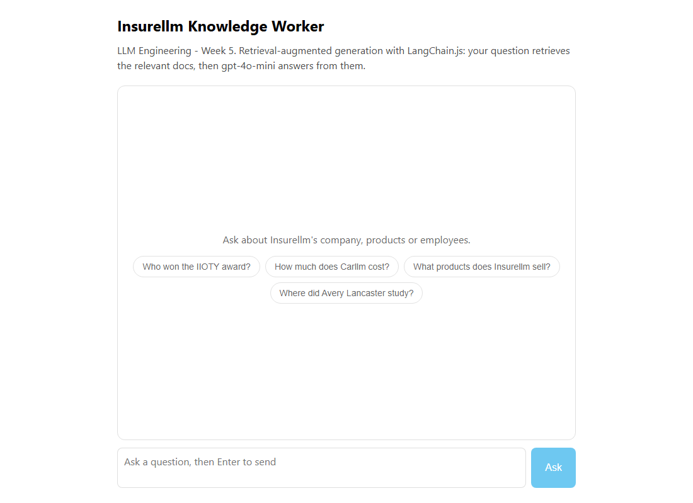

Week 5 · Project Build — AI Knowledge Worker, Step by Step
Build a personal AI knowledge worker over your own documents: a LangChain + Gradio app in Python + uv, and a LangChain.js RAG app with a React chat UI in Node + TypeScript.
Build it yourself · Python + uv (LangChain) and LangChain.js + ReactThe five day-pages explain Week 5 one idea at a time. This page is different: it is a hands-on build.
You will put the whole week's project together, in order, so that at the end you can
ask questions about your own documents and get answers that cite the files they came from.
This is the course's retrieval-augmented generation (RAG)
project: a personal "knowledge worker" that reads a folder of your files, finds the passages that match
your question, and lets gpt-4o-mini answer using only those passages. The sample files are the
fictional company Insurellm's knowledge
base (company, products and employees), but you can drop in your own notes instead.
As in the rest of the guide you build it in two stacks and pick whichever world you live in:
- Track A is the course's own stack: uv-managed Python with LangChain and a Gradio chat page. It stores the document vectors in a Chroma database on disk. The full, explained code is on the Day 4 and Day 5 pages. The API-calling code is shown exactly as in the course; it was not run live in this guide.
- Track B is the guide's extra port:
React on the front end with a small
Node server, written in
TypeScript, using
LangChain.js. The server is a tiny
Hono API with one endpoint. The finished code lives in the
week5-ts/folder, and the steps below match those files exactly. It type-checks and the web app builds; the model calls were not run live.
MemoryVectorStore) that is
rebuilt each time the server starts. The in-memory store needs no native libraries and no separate database,
which keeps the TypeScript setup tiny. The idea is identical in both: turn each chunk of text into a vector,
then find the chunks whose vectors are closest to your question.Build it step by step
Both tracks follow the same four stages. The first two stages prepare your documents (load, split, embed, store); the last two answer questions over them. Do the stages in order and check each one before moving on.
Track A - Python + uv (LangChain + Gradio)
This track builds the knowledge worker as a Python script with a Gradio chat page on top. The full, explained code is on the Day 4 and Day 5 pages; here we only list what to create and run. Each step tells you what to type and what you should see.
New to LangChain? What it is and why this track uses it
LangChain is a Python library that gives you ready-made building blocks for RAG: document loaders (read files into a standardDocument shape), text splitters (cut long documents into
chunks), embeddings (turn text into vectors), vector stores (save and search those
vectors), and chains (wire a retriever, a model and the conversation together). Instead of writing
each piece by hand, you assemble these parts. The course uses it so a few lines of glue give you a working
question-answering pipeline over your own files.- Create the project Make a fresh folder and let uv manage it. uv is the fast
Python package manager the course uses instead of Anaconda:
You can also work inside the course repo you cloned in Week 1; either way the commands below are the same.uv init llm-week5 cd llm-week5 - Add the libraries Add LangChain, its OpenAI and Chroma adapters, the Chroma
database, Gradio and the env loader.
uv addinstalls each one and records it inpyproject.toml:uv add langchain langchain-openai langchain-chroma langchain-community chromadb gradio python-dotenvlangchainis the core framework,langchain-openaiprovides the embeddings and the chat model,langchain-chromapluschromadbare the vector store,langchain-communityholds the document loaders,gradiodraws the chat page, andpython-dotenvloads your key from a.envfile. - Set your API key Create a
.envfile in the project root with your OpenAI key. The embeddings and the chat model both call OpenAI, so this key is required:OPENAI_API_KEY=sk-proj-....envis git-ignored; never commit it. - Put your documents in a folder Create a
knowledge-base/folder and drop your files into sub-folders by type (the course shipscompany/,products/,employees/andcontracts/as Markdown). The sub-folder name becomes each document's type, so answers can say which kind of document they came from. - Load and split the documents In your script, use a LangChain loader to read
every file into a
Document, then a text splitter to cut each one into overlapping chunks:
The overlap means a sentence near a chunk boundary still appears whole in one of the chunks, which improves what the search can find.from langchain_community.document_loaders import DirectoryLoader, TextLoader from langchain.text_splitter import RecursiveCharacterTextSplitter loader = DirectoryLoader("knowledge-base", glob="**/*.md", loader_cls=TextLoader) documents = loader.load() splitter = RecursiveCharacterTextSplitter(chunk_size=1000, chunk_overlap=200) chunks = splitter.split_documents(documents) - Embed and store in Chroma Turn the chunks into vectors with
OpenAIEmbeddingsand save them in a Chroma store on disk:
Chroma writes the vectors to thefrom langchain_openai import OpenAIEmbeddings from langchain_chroma import Chroma embeddings = OpenAIEmbeddings(model="text-embedding-3-small") vectorstore = Chroma.from_documents(chunks, embeddings, persist_directory="vector_db")vector_dbfolder, so you only pay to embed once; later runs reopen the folder. - Build the conversational RAG chain Wire the store's
retriever, a
ChatOpenAImodel and a memory object into aConversationalRetrievalChain. The retriever fetches the matching chunks, the model answers from them, and the memory keeps the chat history so follow-up questions make sense:from langchain_openai import ChatOpenAI from langchain.memory import ConversationBufferMemory from langchain.chains import ConversationalRetrievalChain llm = ChatOpenAI(model="gpt-4o-mini", temperature=0.2) memory = ConversationBufferMemory(memory_key="chat_history", return_messages=True) retriever = vectorstore.as_retriever(search_kwargs={"k": 4}) chain = ConversationalRetrievalChain.from_llm(llm=llm, retriever=retriever, memory=memory)k=4means "retrieve the four closest chunks" for each question. - Wrap it in a Gradio chat Give Gradio a function that passes the message to the
chain and returns the answer;
gr.ChatInterfacedraws the whole chat page for you:
This is the knowledge-worker UI the course shows: a single chat box over your documents.import gradio as gr def chat(message, history): return chain.invoke({"question": message})["answer"] gr.ChatInterface(chat).launch() - Run it Start the app from inside the uv project:
uv run python app.pyuv runruns the script inside the project's virtual environment without you activating it. Gradio prints a local URL (something likehttp://127.0.0.1:7860); open it and ask a question such as "Who won the IIOTY award?".
vector_db folder. The Gradio page opens with one chat box. When you ask a
question, the answer comes back grounded in your documents - ask about something that is not in the files and
a good prompt makes the model say it does not know..env file (or putting
it in the wrong folder) means the embeddings call fails with an authentication error. Pointing the loader at
the wrong folder, or using the wrong glob for your file type, loads zero documents - the chain
then has nothing to retrieve. If you change the documents, delete or rebuild vector_db so the
new text is embedded.reasoning_effort parameter; the guide shows the video-era gpt-4o-mini and
text-embedding-3-small. Treat the model name as a value you may need to swap, since AI companies
retire models. The repo also builds the chain by hand on Day 4/5 rather than through a single
ConversationalRetrievalChain; the pieces (retriever, model, history) are the same either way.Track B - LangChain.js + React + Node + TypeScript
This track rebuilds the knowledge worker as a small web app: a React chat page talks to a Node server
written in TypeScript, and the server answers each question with a LangChain.js RAG pipeline. The scripts run
with tsx, the server is built with Hono, and the page is bundled
by Vite. These are the real files in week5-ts/; the
steps below match them exactly.
Why an in-memory store here instead of Chroma?
LangChain.js ships aMemoryVectorStore that holds the vectors in the server's memory. It needs
no database server and no native libraries, so npm add and npm run are all you
need. The trade-off is that the vectors are rebuilt every time the server starts (embedding the docs again),
and they vanish when it stops. For a small knowledge base that is fine; for a large one you would swap in a
persistent store, exactly as Track A uses Chroma.week5-ts/ project. Highlighted files are the source you write; npm creates the
rest (node_modules, lock file). One package holds the ingest step, the RAG pipeline, the server
and the web app together.- Scaffold the project You need Node (version 18 or newer) first; check with
node --version. Create the web app with Vite's React + TypeScript template:
This project keeps its Vite app under anpm create vite@latest week5-ts -- --template react-ts cd week5-tsweb/folder and addsserver/,src/andknowledge/beside it, all in one package (runnpm initif you are assembling the folder by hand, and set"type": "module"). - Add the runtime libraries Add LangChain.js, its OpenAI and text-splitter
packages, and the server. npm
addinstalls them and records them inpackage.json:npm add langchain @langchain/openai @langchain/core @langchain/textsplitters hono @hono/node-server dotenvlangchainprovides theMemoryVectorStore,@langchain/openaigives the embeddings and the chat model,@langchain/coreholds theDocumentand message types,@langchain/textsplittersis the splitter,hono+@hono/node-serverare the web server, anddotenvloads the.env. - Add the dev tool Add tsx so you can run a
.tsfile directly (React, Vite and TypeScript already came with the scaffold):npm add -D tsx-Dmarks it as a development-only dependency. - Put your documents in knowledge/ Create a
knowledge/folder with sub-folders by type (the project shipscompany/,products/andemployees/as Markdown). The top-level sub-folder name becomes each document'sdoc_type, exactly like the Python folders. - Create the ingest module Create
src/ingest.ts. It walksknowledge/and reads each.md/.txtfile into aDocument(a hand-rolled DirectoryLoader), splits them withRecursiveCharacterTextSplitter(chunkSize 1000,chunkOverlap 200), embeds them withOpenAIEmbeddings(text-embedding-3-small), and returns aMemoryVectorStorefromMemoryVectorStore.fromDocuments(...). Loading and splitting work with no key; only building the store calls OpenAI, so ahasOpenAIKey()guard keeps imports safe. The full file is embedded on the Day 1 and Day 2 pages. - Create the RAG pipeline Create
src/rag.ts. It builds the store once and exportsanswer(question, history): it callsstore.asRetriever(4)to fetch the top chunks, joins them into a context string, then asksChatOpenAI(gpt-4o-mini,temperature 0.2) to answer only from that context, and returns{ answer, sources }wheresourcesis the de-duplicated list of source filenames. The full file is on the Day 4 page. - Create the Hono API Create
server/index.ts. It builds a Hono app with one route,POST /api/ask, that reads{ question, history }, returns a400JSON error if the key or the body is missing, callsanswer(...)and returns{ answer, sources }. It also serves the built React app. It listens onhttp://localhost:8788. - Build the React chat UI Create
web/src/App.tsx: a chat list, atextareawith an Ask button, a few suggestion chips, andfetch("/api/ask", ...)to send the question and the history. Each answer is shown with itssourcesas small tags so you can see which documents were used. The full component is on the Day 5 page. - Check the scripts and run The commands are wired in
package.json. These are the real scripts inweek5-ts/:{ "scripts": { "ingest": "tsx src/ingest.ts", "ask": "tsx src/rag.ts", "api": "tsx server/index.ts", "web": "vite --config web/vite.config.ts", "typecheck": "tsc --noEmit -p tsconfig.json", "build": "tsc --noEmit -p tsconfig.json && vite build --config web/vite.config.ts" } }ingestbuilds and reports the store once,askanswers one question from the command line,apistarts the Hono server andwebstarts the Vite dev server. Run the app in two terminals - the API in the first:
and the web server in the second:npm run api
Then opennpm run webhttp://localhost:5173. Vite proxies/apito the server on port8788, so the browser can reach it. Ask a question and read the answer with its sources.
npm run api prints
LLM Engineering Week 5 (RAG) API on http://localhost:8788. The page at
http://localhost:5173 shows a chat box with a few suggestion chips. When you ask a question, the
answer appears with a row of Sources tags naming the files it used. With no key set, you get a clear
400 error instead of a crash.npm run web but not
npm run api makes every request fail - both must be running. Forgetting the .env
file returns the 400 "OPENAI_API_KEY is not set" error. Because the store is in memory, the first
question after each restart is slower: the server embeds all the docs before it can answer.week5-ts/ project pins the
video-era model ids (gpt-4o-mini and text-embedding-3-small) for reproducible
results. LangChain.js does not ship the exact ConversationalRetrievalChain helper the Python
course uses, so rag.ts wires the retriever, context and model together directly - the result is
the same RAG pipeline, written out step by step.
What you built
In whichever track you chose, you now have the full Week 5 project: a personal knowledge worker that reads your documents and answers questions about them, citing the files it used. Track A runs the course's own stack - a uv-managed Python script using LangChain and a Gradio chat, with the vectors stored in Chroma on disk. Track B rebuilds the same pipeline as a React app with a Hono API and LangChain.js, keeping the vectors in an in-memory store. The core move is identical in both: load and split your docs, embed and store the chunks, then for each question retrieve the closest chunks and let gpt-4o-mini answer from them.
- You built Week 5's RAG knowledge worker in two stacks: Python + uv with LangChain and a Gradio chat (Track A) and React + Node + TypeScript with LangChain.js and a Hono API (Track B).
- Each track followed the same four stages: set up, add libraries, create files, run and ask.
- Track A:
uv add langchain langchain-openai langchain-chroma langchain-community chromadb gradio python-dotenv, setOPENAI_API_KEY, put your docs inknowledge-base/, load and split them, embed and store in Chroma, build aConversationalRetrievalChain(retriever +ChatOpenAI+ memory), wrap it in agr.ChatInterface, and runuv run python app.py. - Track B matches the real
week5-ts/project: the Vite react-ts scaffold,npm add langchain @langchain/openai @langchain/core @langchain/textsplitters hono @hono/node-server dotenvandnpm add -D tsx, thensrc/ingest.ts(load/split/embed into aMemoryVectorStore),src/rag.ts(retriever toChatOpenAItoanswer()),server/index.ts(HonoPOST /api/ask) andweb/src/App.tsx(the React chat), run withnpm run api+npm run web. Track B keeps its vectors in memory rather than Chroma. - The full line-by-line explanation of the code is on Day 4 (the RAG chain) and Day 5 (debugging and the finished knowledge worker).